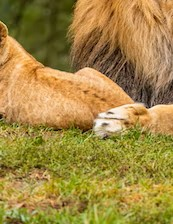
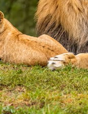

Central Zoo History
The Central Zoo is a tale of growth, transformation, and wild adventures! It all started back in 1980, when a small patch of land was dedicated to creating a home for some of nature's most amazing creatures. Over the years, the zoo expanded and evolved, adding more land, new residents, and exciting attractions. Today, The Central Zoo stands proud as one of the largest and most beloved zoos in the town, with a sprawling 33 acres of pristine nature and unforgettable experiences. But it's not just the land that has grown, the zoo's history is also filled with stories of incredible creatures and the people who have dedicated their lives to caring for them. From the very beginning, The Central Zoo has been a place where people come to connect with nature and learn about the incredible creatures that call it home. With its focus on conservation, education, and creating a fun and safe environment for both visitors and animals, The Central Zoo has become a true gem in the town. And the wild adventures don't stop there! Visitors can embark on a journey through the animal kingdom. With interactive displays, hands-on exhibits, and educational programs, there's always something new and exciting to discover. So come join us on a journey through the history and heart of The Central Zoo, where the wildest adventures are waiting to be had!


 
